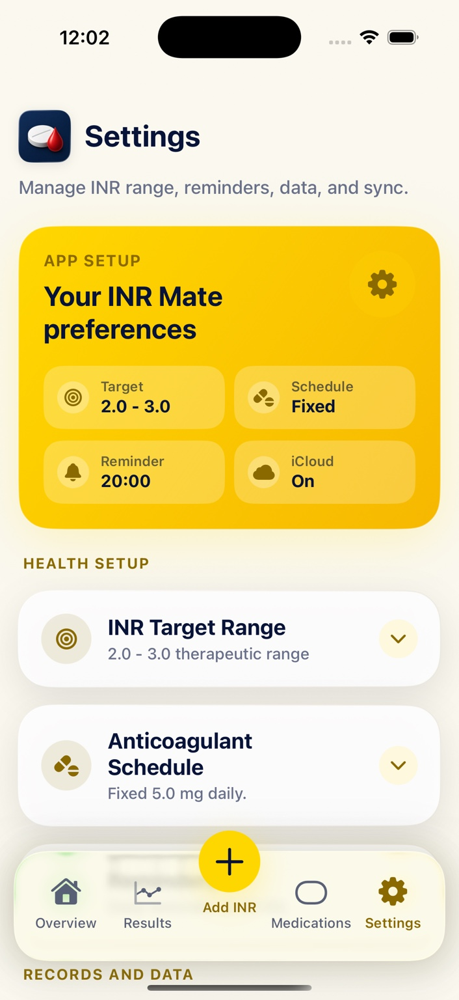

✓
Log INR readings
Record INR values with dates, times and notes. See whether readings are below, within or above your target range.
INR Mate helps people taking warfarin record INR results, log doses, set reminders and review trends in a calm, readable app for iPhone, iPad and Apple Watch.
For tracking and record keeping only. INR Mate does not provide medical advice or dosing recommendations.
The app focuses on what people actually need between appointments: results, doses, reminders, trends and shareable records.
Record INR values with dates, times and notes. See whether readings are below, within or above your target range.
Keep planned and taken anticoagulant doses together, including recent dose history and one-off dose records.
INR Mate Pro unlocks full history, charts, TTR-style insights and export tools for appointments.
With Pro, keep INR Mate in step across your Apple devices using your private iCloud account.
Use the full iPad dashboard, glance at Apple Watch, and keep key information nearby with widgets and complications.
Create CSV, JSON or PDF exports from your saved records when you need to share information with your care team.



Free users can keep adding readings and doses. Pro unlocks the full saved archive, analysis and Apple ecosystem features.
A useful iPhone tracker for getting started.
Unlock your full history and the richer Apple-device experience.
INR Mate stores records on your device and can sync through Apple iCloud if you enable Pro sync. We do not sell your personal data and do not use your health records for advertising.
Read the privacy policyINR Mate is for tracking and record keeping only. It does not provide medical advice, dosing recommendations, diagnosis, treatment advice or clinical decision support.
Always follow the advice of your anticoagulation clinic, GP, doctor, pharmacist, nurse or healthcare professional.